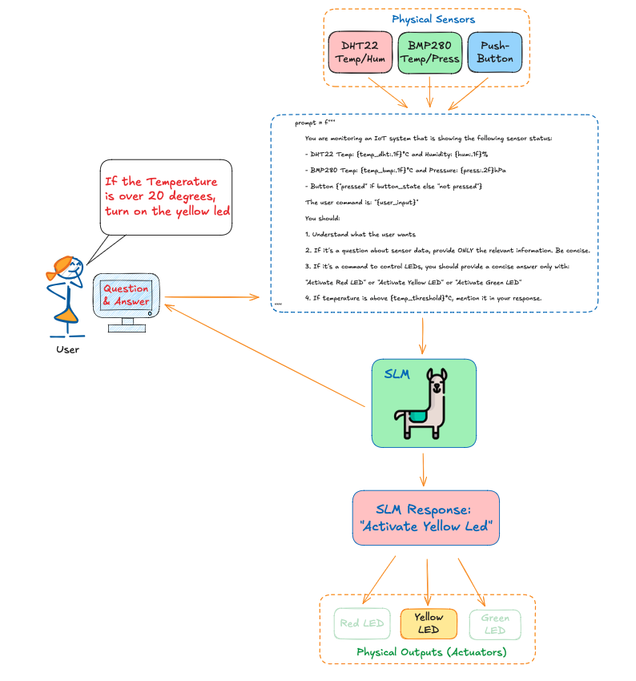
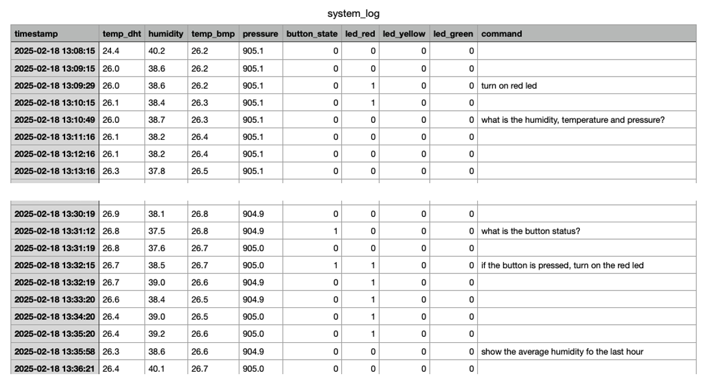

Experimenting with SLMs for IoT Control
Introduction
This lab explores the implementation of Small Language Models (SLMs) in IoT control systems, demonstrating the possibility of creating a monitoring and control system using edge AI. We’ll integrate these models with physical sensors and actuators, creating an intelligent IoT system capable of natural language interaction. While this implementation shows the potential of integrating AI with physical systems, it also highlights current limitations and areas for improvement.
This project builds upon the concepts introduced in “Small Language Models (SLMs)” and “Physical Computing with Raspberry Pi.”
The Physical Computing lab laid the groundwork for interfacing with hardware components using the Raspberry Pi’s GPIO pins. We’ll revisit these concepts, focusing on connecting and interacting with sensors (DHT22 for temperature and humidity, BMP280 for temperature and pressure, and a push-button for digital inputs), besides controlling actuators (LEDs) in a more sophisticated setup.
We will progress from a simple IoT system to a more advanced platform that combines real-time monitoring, historical data analysis, and natural language processing (NLP).

This lab demonstrates a progressive evolution through several key stages:
- Basic Sensor Integration
- Hardware interface with DHT22 (temperature/humidity) and BMP280 (temperature/pressure) sensors
- Digital input through a push-button
- Output control via RGB LEDs
- Foundational data collection and device control
- SLM Basic Analysis
- Initial integration with small language models
- Simple observation and reporting of system state
- Demonstration of SLM’s ability to interpret sensor data
- Active Control Implementation
- Direct LED control based on SLM decisions
- Temperature threshold monitoring
- Emergency state detection via button input
- Real-time system state analysis
- Natural Language Interaction
- Free-form command interpretation
- Context-aware responses
- Multiple SLM model support
- Flexible query handling
- Data Logging and Analysis
- Continuous system state recording
- Trend analysis and pattern detection
- Historical data querying
- Performance monitoring
Let’s begin by setting up our hardware and software environment, building upon the foundation established in our previous labs.
Setup
Hardware Setup
Connection Diagram
| Component | GPIO Pin |
|---|---|
| DHT22 | GPIO16 |
| BMP280 - SCL | GPIO03 |
| BMP280 - SDA | GPIO02 |
| Red LED | GPIO13 |
| Yellow LED | GPIO19 |
| Green LED | GPIO26 |
| Button | GPIO20 |

- Raspberry Pi 5 (with an OS installed, as detailed in previous labs)
- DHT22 temperature and humidity sensor
- BMP280 temperature and pressure sensor
- 3 LEDs (red, yellow, green)
- Push button
- 330Ω resistors (3)
- Jumper wires and breadboard
Software Prerequisites
- Install required libraries:
pip install adafruit-circuitpython-dht
pip install adafruit-circuitpython-bmp280Basic Sensor Integration
Let’s create a Python script (monitor.py) to handle the sensors and actuators. This script will contain functions to be called from other scripts later:
import time
import board
import adafruit_dht
import adafruit_bmp280
from gpiozero import LED, Button
DHT22Sensor = adafruit_dht.DHT22(board.D16)
i2c = board.I2C()
bmp280Sensor = adafruit_bmp280.Adafruit_BMP280_I2C(i2c, address=0x76)
bmp280Sensor.sea_level_pressure = 1013.25
ledRed = LED(13)
ledYlw = LED(19)
ledGrn = LED(26)
button = Button(20)
def collect_data():
try:
temperature_dht = DHT22Sensor.temperature
humidity = DHT22Sensor.humidity
temperature_bmp = bmp280Sensor.temperature
pressure = bmp280Sensor.pressure
button_pressed = button.is_pressed
return temperature_dht, humidity, temperature_bmp, pressure, button_pressed
except RuntimeError:
return None, None, None, None, None
def led_status():
ledRedSts = ledRed.is_lit
ledYlwSts = ledYlw.is_lit
ledGrnSts = ledGrn.is_lit
return ledRedSts, ledYlwSts, ledGrnSts
def control_leds(red, yellow, green):
ledRed.on() if red else ledRed.off()
ledYlw.on() if yellow else ledYlw.off()
ledGrn.on() if green else ledGrn.off()We can test the functions using:
while True:
ledRedSts, ledYlwSts, ledGrnSts = led_status()
temp_dht, hum, temp_bmp, press, button_state = collect_data()
#control_leds(True, True, True)
if all(v is not None for v in [temp_dht, hum, temp_bmp, press]):
print(f"DHT22 Temp: {temp_dht:.1f}°C, Humidity: {hum:.1f}%")
print(f"BMP280 Temp: {temp_bmp:.1f}°C, Pressure: {press:.2f}hPa")
print(f"Button {'pressed' if button_state else 'not pressed'}")
print(f"Red LED {'is on' if ledRedSts else 'is off'}")
print(f"Yellow LED {'is on' if ledYlwSts else 'is off'}")
print(f"Green LED {'is on' if ledGrnSts else 'is off'}")
time.sleep(2)Install Ollama on your Raspberry Pi (follow Ollama’s official documentation or the SLM lab)
SLM Basic Analysis
Now, let’s create a new script, slm_basic_analysis.py, which will be responsible for analysing the hardware components’ status, according to the following diagram:
The diagram shows the basic analysis system, which consists of:
- Hardware Layer:
- Sensors: DHT22 (temperature/humidity), BMP280 (temperature/pressure)
- Input: Emergency button
- Output: Three LEDs (Red, Yellow, Green)
- monitor.py:
- Handles all hardware interactions
- Provides two main functions:
collect_data(): Reads all sensor valuesled_status(): Checks current LED states
- slm_basic_analysis.py:
- Creates a descriptive prompt using sensor data
- Sends prompt to SLM (for example, the
Llama 3.2 1B) - Displays analysis results
- In this step we will not control the LEDs (observation only)
Okay, let’s implement the code. First, if you haven’t already, install Ollama on your Raspberry Pi (follow Ollama’s official documentation or the SLM lab).
Let’s import the Ollama library and the functions to monitor the HW (from the previous script):
import ollama
from monitor import collect_data, led_statusCalling the monitor functions, we will get all data:
ledRedSts, ledYlwSts, ledGrnSts = led_status()
temp_dht, hum, temp_bmp, press, button_state = collect_data()Now, the heart of out code, we will generate the Prompt, using the data captured on the previous variables:
prompt = f"""
You are an experienced environmental scientist.
Analyze the information received from an IoT system:
DHT22 Temp: {temp_dht:.1f}°C and Humidity: {hum:.1f}%
BMP280 Temp: {temp_bmp:.1f}°C and Pressure: {press:.2f}hPa
Button {"pressed" if button_state else "not pressed"}
Red LED {"is on" if ledRedSts else "is off"}
Yellow LED {"is on" if ledYlwSts else "is off"}
Green LED {"is on" if ledGrnSts else "is off"}
Where,
- The button, not pressed, shows a normal operation
- The button, when pressed, shows an emergency
- Red LED when is on, indicates a problem/emergency.
- Yellow LED when is on indicates a warning situation.
- Green LED when is on, indicates system is OK.
If the temperature is over 20°C, mean a warning situation
You should answer only with: "Activate Red LED" or
"Activate Yellow LED" or "Activate Green LED"
"""Now, the Prompt will be passed to the SLM, which will generate a response:
MODEL = 'llama3.2:1b'
PROMPT = prompt
response = ollama.generate(
model=MODEL,
prompt=PROMPT
)The last stage will be show the real monitored data and the SLM’s response:
print(f"\nSmart IoT Analyser using {MODEL} model\n")
print(f"SYSTEM REAL DATA")
print(f" - DHT22 ==> Temp: {temp_dht:.1f}°C, Humidity: {hum:.1f}%")
print(f" - BMP280 => Temp: {temp_bmp:.1f}°C, Pressure: {press:.2f}hPa")
print(f" - Button {'pressed' if button_state else 'not pressed'}")
print(f" - Red LED {'is on' if ledRedSts else 'is off'}")
print(f" - Yellow LED {'is on' if ledYlwSts else 'is off'}")
print(f" - Green LED {'is on' if ledGrnSts else 'is off'}")
print(f"\n>> {MODEL} Response: {response['response']}")Runing the Python script, we got:
In this initial experiment, the system successfully collected sensor data (temperatures of 26.3°C and 26.1°C from DHT22 and BMP280, respectively, 40.2% humidity, and 908.84hPa pressure) and processed this information through the SLM, which produced a coherent response recommending the activation of the yellow LED due to elevated temperature conditions.
The model’s ability to interpret sensor data and provide logical, rule-based decisions shows promise. Still, the simplistic nature of the current implementation (using basic thresholds and binary LED outputs) suggests room for significant enhancement through more sophisticated prompting strategies, historical data integration, and the implementation of safety mechanisms. Also, the result is probabilistic, meaning it should change after execution.
Active Control Implementation
OK, let’s get a usable output from the SLM by activating one of the LEDs. For that, we will create an action system flow diagram to understand the code implementation better:
The diagram shows the new action-based system, which adds a User Interface where a user will choose which Model to use based on the SLMs pulled by Ollama. The user will also select the temperature threshold for the test (For example, the actual temperature over this threshold should be configured as a “warning”).
The SLM will proceed with a decision-making process regarding what the active LED should be based on the data captured by the system.
The key differences for this new code are:
- The basic analysis version only observes and reports
- The action version actively controls the LEDs
- The action version includes user configuration
- The action version implements a continuous monitoring loop
Ok, let’s implement the code. Go to the GitHub and download the script slm_basic_analysis_action.py
The script implementation consists of several key components:
- Model Selection System:
MODELS = {
1: ('deepseek-r1:1.5b', 'DeepSeek R1 1.5B'),
2: ('llama3.2:1b', 'Llama 3.2 1B'),
3: ('llama3.2:3b', 'Llama 3.2 3B'),
4: ('phi3:latest', 'Phi-3'),
5: ('gemma:2b', 'Gemma 2B'),
}- Provides multiple SLM options
- Each model offers different capabilities and performance characteristics
- Users can select based on their needs (speed vs. accuracy)
- User Interface Functions:
def get_user_input():
"""Get user input for model selection and temperature threshold"""
print("\nAvailable Models:")
for num, (_, name) in MODELS.items():
print(f"{num}. {name}")
# Get model selection
while True:
try:
model_num = int(input("\nSelect model (1-4): "))
if model_num in MODELS:
break
print("Please select a number between 1 and 4.")
except ValueError:
print("Please enter a valid number.")
# Get temperature threshold
while True:
try:
temp_threshold = float(input("Enter temperature threshold (°C): "))
break
except ValueError:
print("Please enter a valid number for temperature threshold.")
return MODELS[model_num][0], MODELS[model_num][1], temp_threshold- Handles model selection
- Sets temperature threshold
- Includes input validation
- Response Parser:
def parse_llm_response(response_text):
"""Parse the LLM response to extract LED control instructions."""
response_lower = response_text.lower()
red_led = 'activate red led' in response_lower
yellow_led = 'activate yellow led' in response_lower
green_led = 'activate green led' in response_lower
return (red_led, yellow_led, green_led)- Converts text response to control signals
- Simple but effective parsing strategy
- Returns boolean tuple for LED states
- Monitoring System:
def monitor_system(model, model_name, temp_threshold):
"""Monitor system continuously"""
while True:
try:
# Collect sensor data
temp_dht, hum, temp_bmp, press, button_state = collect_data()
# Generate prompt and get SLM response
response = ollama.generate(
model=model,
prompt=current_prompt
)
# Control LEDs based on response
red, yellow, green = parse_llm_response(response['response'])
control_leds(red, yellow, green)
# Print status
print_status(...)
time.sleep(2)
except KeyboardInterrupt:
print("\nMonitoring stopped by user")
control_leds(False, False, False) # Turn off all LEDs
break- Continuous monitoring loop
- Error handling
- Clean shutdown capability
- Status reporting
- Prompt Engineering:
prompt = f"""
You are monitoring an IoT system which is showing the
following sensor status:
- DHT22 Temp: {temp_dht:.1f}°C and Humidity: {hum:.1f}%
- BMP280 Temp: {temp_bmp:.1f}°C and Pressure: {press:.2f}hPa
- Button {"pressed" if button_state else "not pressed"}
Based on the Rules:
- If system is working in normal conditions → Activate Green LED
- If DHT22 Temp or BMP280 Temp are greater
than {temp_threshold}°C → Activate Yellow LED
- If Button pressed, it is an emergency → Activate Red LED
You should provide a brief answer only with: "Activate Red LED"
or "Activate Yellow LED" or "Activate Green LED"
"""- Structured prompt format
- Clear rules and conditions
- Constrained response format
In the video, we can see how the system works with different models.
And here one screen-shot of the SLM working on the Raspi:
So, at this point, what we have is something like:
What we can realize is that the SLM-based system can read and react to the physical world, but with a simple prompt, we cannot guarantee that the result will be correct.
Let’s see how it evolved from the previous code to a new approach, where the SLM should react to a user’s command.
Natural Language Interaction (User Command)
After implementing a basic monitoring and automated LED control with slm_basic_analysis_action.py, we can now create a more interactive system that responds to user commands in natural language. This represents an evolution where the SLM makes decisions based on sensor data and understands and responds to user queries and commands.
Key Components and Features
Model Selection
MODELS = { 1: ('deepseek-r1:1.5b', 'DeepSeek R1 1.5B'), 2: ('llama3.2:1b', 'Llama 3.2 1B'), 3: ('llama3.2:3b', 'Llama 3.2 3B'), 4: ('phi3:latest', 'Phi-3'), 5: ('gemma:2b', 'Gemma 2B'), }- Maintains the same model options as previous versions
- Users can select their preferred SLM model for interaction
Command Processing
def process_command(model, temp_threshold, user_input): prompt = f""" You are monitoring an IoT system which is showing the following sensor status: - DHT22 Temp: {temp_dht:.1f}°C and Humidity: {hum:.1f}% - BMP280 Temp: {temp_bmp:.1f}°C and Pressure: {press:.2f}hPa - Button {"pressed" if button_state else "not pressed"} The user command is: "{user_input}" """- Takes natural language input from users
- Creates context-aware prompts by including current sensor data
- Maintains temperature threshold monitoring
LED Control
def parse_llm_response(response_text): """Parse the LLM response to extract LED control instructions.""" response_lower = response_text.lower() red_led = 'activate red led' in response_lower yellow_led = 'activate yellow led' in response_lower green_led = 'activate green led' in response_lower return (red_led, yellow_led, green_led)- Uses the same reliable parsing mechanism from previous versions
- Maintains consistency in LED control commands
Interactive Loop
while True: user_input = input("Command: ").strip().lower() if user_input == 'quit': print("\nShutting down...") control_leds(False, False, False) break process_command(model, temp_threshold, user_input)- Provides continuous interaction through a command prompt
- Processes one command at a time
- Allows clean system shutdown
System Capabilities
The system can now: 1. Accept natural language commands and queries 2. Provide information about sensor readings 3. Control LEDs based on user commands 4. Monitor temperature thresholds 5. Display comprehensive system status after each command
Example Usage
Select model (1-5): 2
Enter temperature threshold (°C): 25
Starting IoT control system with Llama 3.2 1B
Temperature threshold: 25°C
Type 'quit' to exit
Command: what's the current temperature?
==================================================
Time: 14:30:45
DHT22: 22.4°C, 44.8%
BMP280: 23.2°C, 905.4hPa
Button: not pressed
SLM Response: The current temperature is 22.4°C from the DHT22 sensor
and 23.2°C from the BMP280 sensor.
LED Status: R=off, Y=off, G=off
==================================================
Command: turn on the red led
[System activates red LED and shows status]
Command: quit
Shutting down...The previous diagram can be update as:

Let’s see the system runing the above example using the model Llama 3.2 3B:
Or, for example, asking for the SLM to turn on the red LED in case the push-button is activated:
Or the green LED, in case the push-button is not activated:
The video shows several examples of how the system works.
Let’s continue evolving the system, which now includes a log to record what happens with the IoT sensors and actuators every minute.
Data Logging and Analysis
In this step, we enhance our IoT system by adding data logging, analysis capabilities, and more sophisticated interaction. We split the functionality into two files: monitor_log.py for logging and data analysis and slm_basic_interaction_log.py for user interaction.
The Logging System (monitor_log.py)
This module handles all data logging and analysis functions. Let’s break down its key components:
# Core functionality
def setup_log_file():
"""Create or verify log file with headers"""
headers = ['timestamp', 'temp_dht', 'humidity', 'temp_bmp', 'pressure',
'button_state', 'led_red', 'led_yellow', 'led_green', 'command']The system creates a CSV file with headers for all sensor data, LED states, and user commands.
def log_data(timestamp, sensors, leds, command=""):
"""Log system data to CSV file"""
temp_dht, hum, temp_bmp, press, button = sensors
red, yellow, green = leds
row = [
timestamp,
f"{temp_dht:.1f}" if temp_dht is not None else "NA",
f"{hum:.1f}" if hum is not None else "NA",
# ... other sensor and state data
]This function formats and logs each data point with proper error handling.
def automatic_logging():
"""Background thread for automatic logging every minute"""
while not stop_logging.is_set():
try:
sensors = collect_data()
leds = led_status()
# ... log data every minuteA background thread that automatically logs system state every minute.
def count_state_changes(series):
"""Count actual state changes in a binary series"""
series = series.astype(int)
changes = 0
last_state = series.iloc[0]
for state in series[1:]:
if state != last_state:
changes += 1
last_state = stateAccurately counts state changes for LEDs and button presses.
def analyze_log_data():
"""Analyze log data and return statistics"""
# Calculates:
# - Temperature, humidity, and pressure trends
# - Averages for all sensor readings
# - LED and button state changesdef get_log_summary():
"""Get a formatted summary of log data for SLM prompts"""
# Formats all statistics into a readable summaryHere is an example of the log summary generated, which will be sent to the SLM per request:
2. The Interaction System (slm_basic_interaction_log.py)
This module handles user interaction and SLM integration:
MODELS = {
1: ('deepseek-r1:1.5b', 'DeepSeek R1 1.5B'),
2: ('llama3.2:1b', 'Llama 3.2 1B'),
# ... other models
}Available SLM models for interaction.
def process_command(model, temp_threshold, user_input):
"""Process a single user command"""
# Handles:
# 1. Log queries
# 2. LED control commands
# 3. Sensor data queriesdef query_log(query, model):
"""Query the log data using SLM"""
# Gets log summary
# Creates context-aware prompt
# Returns SLM analysisKey Features and Improvements:
- Data Logging
- Automatic background logging every minute
- Comprehensive data storage in CSV format
- Command history tracking
- Data Analysis
- Temperature and humidity trends
- LED and button state change tracking
- Statistical analysis of sensor data
- Natural Language Interaction
- Log querying using natural language
- Trend analysis and reporting
- Historical data access
- Improved Error Handling
- Robust sensor reading protection
- Data validation
- Graceful error recovery
The below flow diagram shows how, in a simplified way, the modules interact and their internal processes.
And in this, with more details:
Now, we can run the slm_basic_interaction_log.py, which will call the other two modules.
python slm_basic_interaction_log.pyWe can try queries like:
"what's the temperature trend?"
"show me button press history"
"turn on the red LED"
"how many times was the button pressed?"Examples:
This modular design separates concerns between data logging/analysis and user interaction, making the system more maintainable and extensible. The SLM integration allows for natural language interaction with current and historical data.
Below is an example of the log created.

Evolution to Structured Command Processing
In our journey to improve the IoT control system, we should explore a more robust approach to handling commands and responses using structured data models, as we saw in the “Calculating Distance project” section of the SLM Chapter, where the Pydantic python library was used for type checking. This evolution can significantly improve code reliability, maintainability, and extensibility.
Our original implementation in slm_basic_interaction.py used simple string parsing and direct command processing. While functional, this approach had several limitations:
- Inconsistent Responses: The SLM could return responses in varying formats, requiring complex parsing logic
- Limited Validation: No built-in validation for command structures or responses
- Error-Prone: String parsing could break with slight variations in model outputs
- Difficult Maintenance: Adding new features or command types required modifying multiple code sections
Structured Data Models
As we did in the SLM chapter, we can use Pydantic to create structured data models that define exactly what our commands and responses should look like. Here’s an example of how we can define our core data structures:
from pydantic import BaseModel, Field
from typing import Optional
class LEDCommand(BaseModel):
red: bool = Field(..., description="Whether to turn on red LED")
yellow: bool = Field(..., description="Whether to turn on yellow LED")
green: bool = Field(..., description="Whether to turn on green LED")
reason: str = Field(..., description="Reasoning behind LED state changes")
class SensorQuery(BaseModel):
temperature_dht: Optional[bool] = Field(False,
description="Whether to include DHT22 temperature")
temperature_bmp: Optional[bool] = Field(False,
description="Whether to include BMP280 temperature")
humidity: Optional[bool] = Field(False,
description="Whether to include humidity")
pressure: Optional[bool] = Field(False,
description="Whether to include pressure")
button: Optional[bool] = Field(False,
description="Whether to include button state")
class CommandResponse(BaseModel):
command_type: str = Field(...,
description="Type of command (led_control, sensor_query, or system_status)")
led_command: Optional[LEDCommand] = Field(None,
description="LED control instructions if applicable")
sensor_query: Optional[SensorQuery] = Field(None,
description="Sensor query specifications if applicable")
response_text: str = Field(...,
description="Human-readable response to the command")These models provide several benefits:
- Type Safety: Automatic validation of data types and structures
- Self-Documenting: Field descriptions provide built-in documentation
- Clear Interface: Explicit definition of what data is expected and provided
- Error Handling: Automatic validation with clear error messages
Improved Command Processing
The command processing system should be changed to use these models, ensuring consistent handling:
def process_command(model: str,
temp_threshold: float,
user_input: str) -> CommandResponse:
"""Process user command and return structured response"""
# Get current system state
temp_dht, hum, temp_bmp, press, button_state = collect_data()
# Create structured prompt
prompt = f"""
You are an IoT system interface. Current system state:
- DHT22: Temperature {temp_dht:.1f}°C, Humidity {hum:.1f}%
- BMP280: Temperature {temp_bmp:.1f}°C, Pressure {press:.2f}hPa
- Button: {"pressed" if button_state else "not pressed"}
- Temperature threshold: {temp_threshold}°C
User command: "{user_input}"
Provide a response in this exact JSON format:
{{
"command_type": "led_control/sensor_query/system_status",
"led_command": {{
"red": boolean,
"yellow": boolean,
"green": boolean,
"reason": "string"
}},
"sensor_query": {{
"temperature_dht": boolean,
"temperature_bmp": boolean,
"humidity": boolean,
"pressure": boolean,
"button": boolean
}},
"response_text": "human readable response"
}}
"""
# Get and parse response
response = client.chat.completions.create(
model=model,
messages=[{"role": "user", "content": prompt}],
response_model=CommandResponse,
max_retries=3,
temperature=0,
)
# Execute LED commands if present
if response.led_command:
control_leds(
response.led_command.red,
response.led_command.yellow,
response.led_command.green
)
return responseBenefits of the New Approach
Reliability:
- Structured responses ensure consistent data format
- Automatic validation catches errors early
- Clear error messages for debugging
Maintainability:
- Models separate data structure from logic
- Easy to add new fields or command types
- Self-documenting code with clear interfaces
Extensibility:
- New command types can be added by extending models
- Easy to add validation rules
- Simple to integrate with other systems
Better Error Handling:
try: response = process_command(model, temp_threshold, user_input) print_status(response, collect_data()) except ValueError as e: print(f"Invalid command or response: {e}") except Exception as e: print(f"Error processing command: {e}")
Handling Different Model Capabilities
Different SLM models may have varying capabilities in generating structured responses. This new approach handles this through:
- Clear Prompting: Explicit examples and format specifications
- Fallback Mechanisms: Graceful degradation for simpler models
- Error Recovery: Ability to extract partial information from responses
Example Usage
# Example command: "What's the temperature?"
Response:
{
"command_type": "sensor_query",
"sensor_query": {
"temperature_dht": true,
"temperature_bmp": true,
"humidity": false,
"pressure": false,
"button": false
},
"response_text": "Current temperature readings: DHT22: 22.4°C, BMP280: 22.8°C"
}
# Example command: "Turn on red LED"
Response:
{
"command_type": "led_control",
"led_command": {
"red": true,
"yellow": false,
"green": false,
"reason": "User requested red LED activation"
},
"response_text": "Activating red LED as requested"
}The evolution to structured command processing may significantly improve our IoT control system, providing a more robust and maintainable foundation for future enhancements.
While the structured approach adds some overhead, the benefits in reliability and maintainability outweigh the minimal performance impact.
I did not play extensively with this approach, but a first attempt can be found in the GitHub repo.
Next Steps
This lab involved experimenting with simple applications and verifying the feasibility of using an SLM to control IoT devices. The final result is far from something usable in the real world, but it can give the start point for more interesting applications. Below are some observations and suggestions for improvement:
SLM responses can be probabilistic and inconsistent. To increase reliability, consider implementing a confidence threshold or voting system using multiple prompts/responses.
Try to add data validation and sanity checks for sensor readings before passing them to the SLM.
Apply Structured Response Parsing as discussed early. Future improvements in this approuch could include:
- Add more sophisticated validation rules
- Implement command history tracking
- Add support for compound commands
- Integrate with the logging system
- Add user permission levels
- Implement command templates for common operations
Consider implementing a fallback mechanism when SLM responses are ambiguous or inconsistent.
Study using RAG and fine-tuning to increase the system’s reliability when using very small models.
Consider adding input validation for user commands to prevent potential issues.
The current implementation queries the SLM for every command. We did it to study how SLMs would behave. We should consider implementing a caching mechanism for common queries.
Some simple commands could be handled without SLM intervention. We can do it programmatically.
Consider implementing a proper state machine for LED control to ensure consistent behavior.
Implement more sophisticated trend analysis using statistical methods.
Add support for more complex queries combining multiple data points.
Conclusion
This lab has demonstrated the progressive evolution of an IoT system from basic sensor integration to an intelligent, interactive platform powered by Small Language Models. Through our journey, we’ve explored several key aspects of combining edge AI with physical computing:
Key Achievements
- Progressive System Development
- Started with basic sensor integration and LED control
- Advanced to SLM-based analysis and decision making
- Implemented natural language interaction
- Added historical data logging and analysis
- Created a complete interactive system
- SLM Integration Insights
- Demonstrated the feasibility of using SLMs for IoT control
- Explored different models and their capabilities
- Implemented various prompting strategies
- Handled both real-time and historical data analysis
- Practical Learning Outcomes
- Hardware-software integration techniques
- Real-time sensor data processing
- Natural language command interpretation
- Data logging and trend analysis
- Error handling and system reliability
Challenges and Limitations
Our implementation revealed several important challenges:
- SLM Reliability
- Probabilistic nature of responses
- Consistency issues in decision making
- Need for better validation and verification
- System Performance
- Response time considerations
- Resource usage on edge devices
- Efficiency of data logging and analysis
- Architectural Constraints
- Simple state management
- Basic error handling
- Limited data validation
Final Thoughts
While this implementation demonstrates the potential of combining SLMs with IoT systems, it also highlights the exciting possibilities and challenges ahead. Though experimental, the system we’ve built provides a solid foundation for understanding how edge AI can enhance IoT applications. As SLMs evolve and improve, their integration with physical computing systems will likely become more robust and practical for real-world applications.
This lab has shown that even with current limitations, SLMs can provide intelligent, natural language interfaces to IoT systems, opening new possibilities for human-machine interaction in the physical world. The future of IoT systems is shaped by intelligent, edge-based solutions that combine AI’s power with the practicality of physical computing.